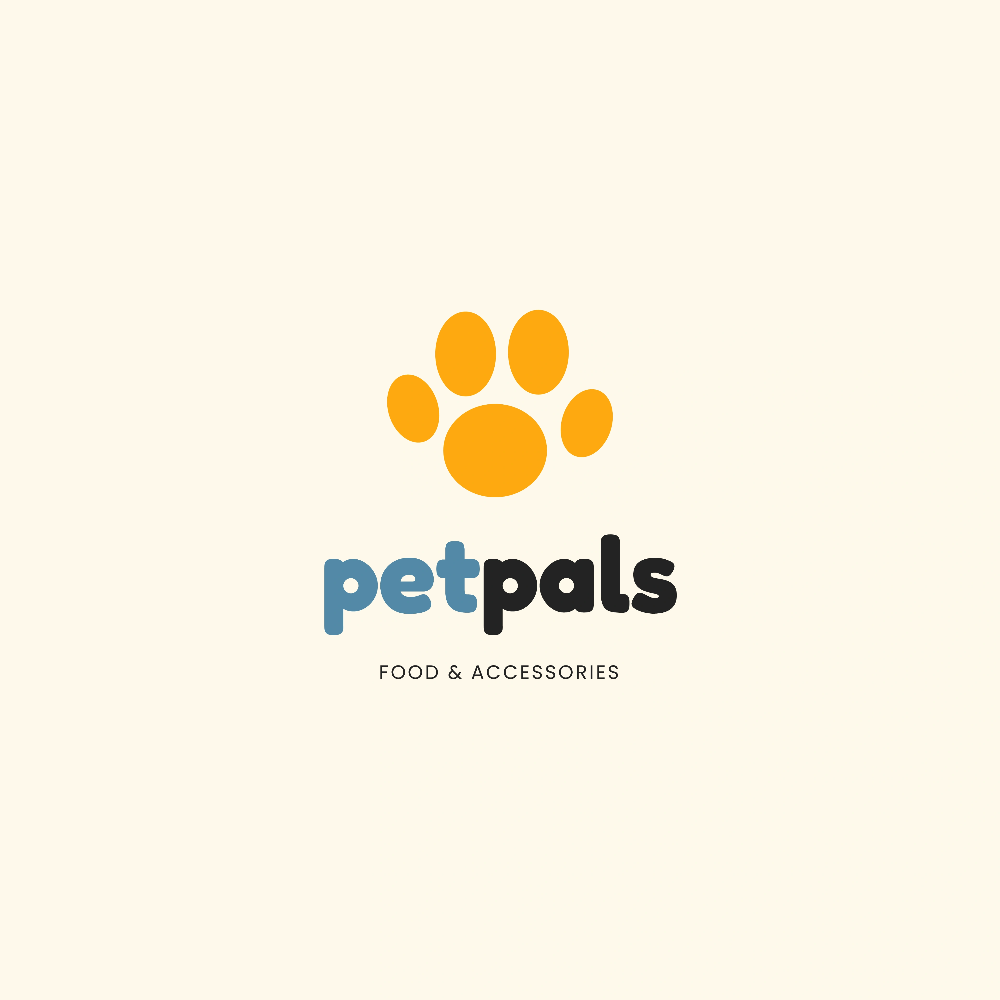
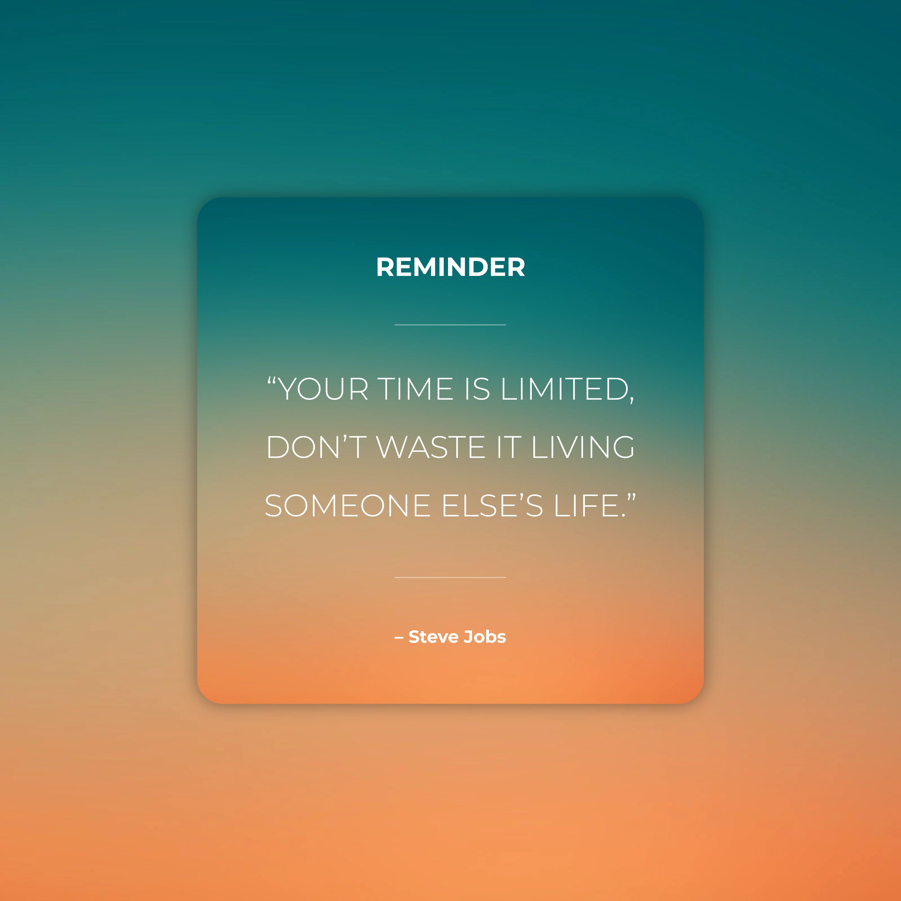
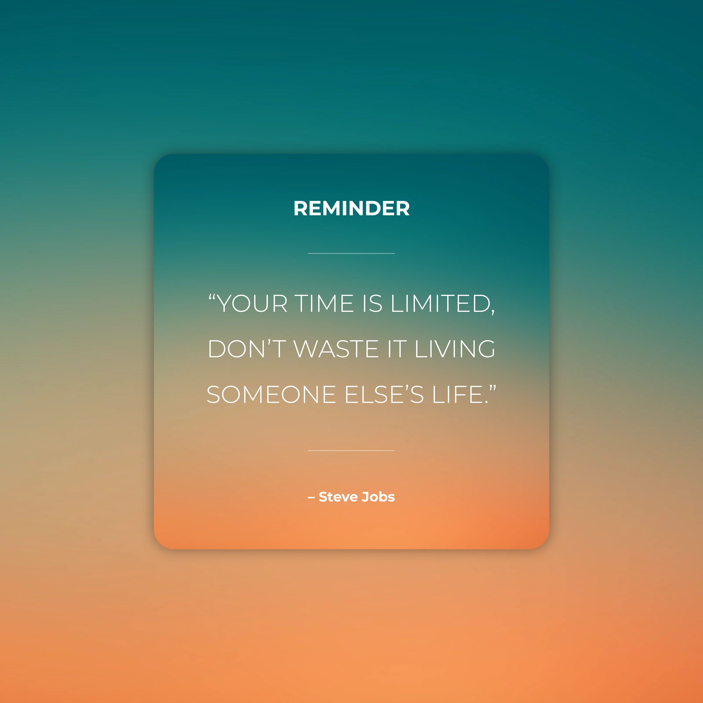
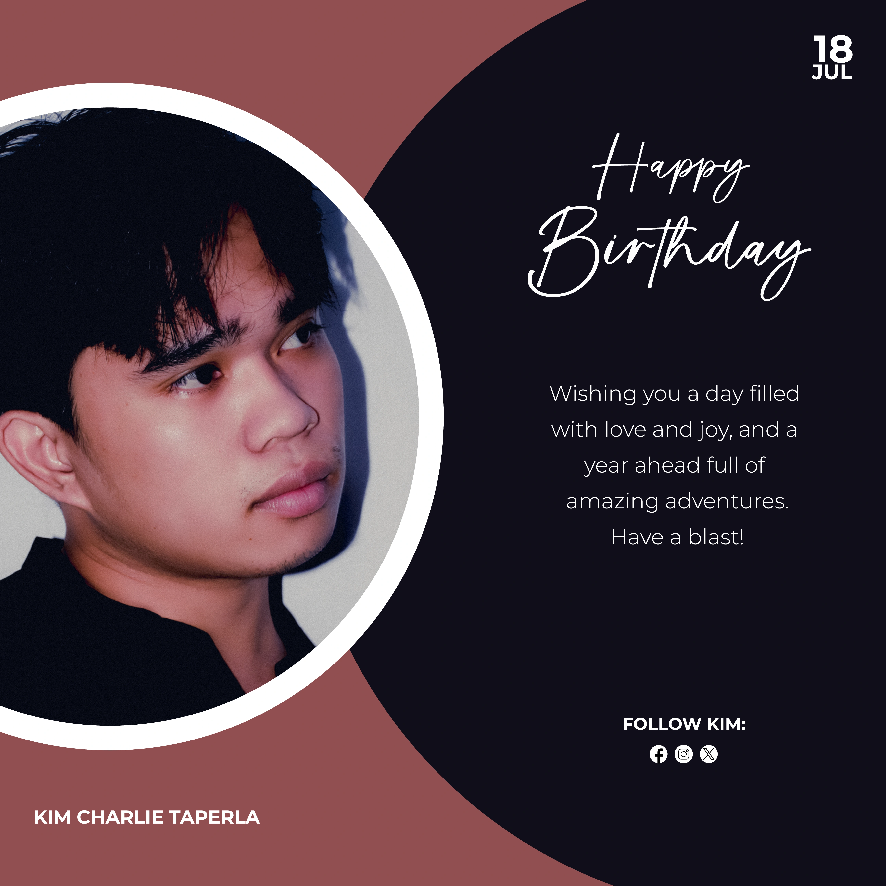
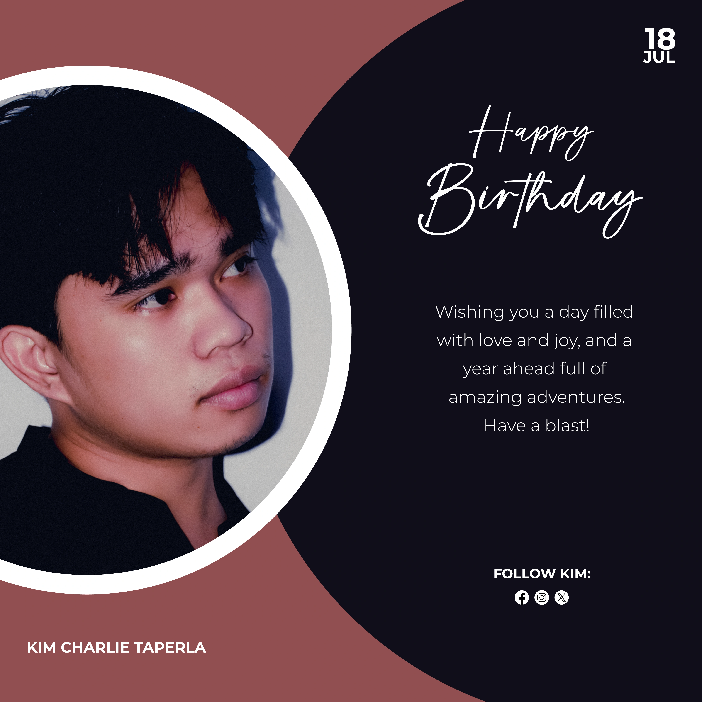

DESCRIPTION:
The Allison Interior Design logo cleverly combines elements of creativity and structure.
The letter "A" features a pencil on the left side and a 2D design on the right, symbolizing both artistic vision and practical design.
The horizontal line at the base forms the shape of a house, representing home and interior design.
The logo is complemented by the text "ALLISON" with "INTERIOR DESIGN" beneath it, using a sophisticated blue color scheme to convey professionalism and trust.
DESCRIPTION:
The EcoNest logo emphasizes simplicity and sustainability.
It features a minimalist house outline composed of two diagonal roof lines, two vertical walls, and a horizontal base line split in the center.
In the middle stands a 2D tree with a green color scheme, symbolizing nature and eco-friendliness.
Below the logo, the text "eco" is displayed in an ecstatic orange color, and "nest" is in a thunder gray color, reflecting a harmonious balance between nature and modern living.

DESCRIPTION:
The Fernando Cruz logo features a stylized letter "F" in a sophisticated cod gray shade, with its edges cut diagonally for a modern, dynamic look.
The middle line of the "F" is separated, adding a unique touch. The logo includes a subtle drop shadow, enhancing its depth and presence.
Beneath the logo, the text "FERNANDO CRUZ" is displayed in uppercase, conveying professionalism and strength.

DESCRIPTION:
The logo features a paw print icon in a color sun shade, symbolizing warmth and care for pets.
The brand name "petpals" is prominently displayed, with "pet" in an Oxford blue shade and "pals" in a shade of black. This color scheme highlights the name's dual emphasis on trustworthiness and approachability.
Below "petpals," the tagline "FOOD & ACCESSORIES" is included in a complementary style to clearly define the company’s offerings.

DESCRIPTION:
The logo features the letters "P" and "R" closely integrated. The "P" is reversed and rendered in black, while the "R" is in a husk shade, creating a stylish contrast.
This combination emphasizes the uniqueness and professionalism of the brand. Below the logo, the name "PALOMA RODRIGUEZ" is displayed, complementing the design with a straightforward and elegant typographic choice.
DESCRIPTION:
The logo features a stylized letter "G" split into two parts. The first part is represented by a golden nugget-colored airplane,
with its 2D-style smoke forming the curved upper part of the letter. This design element symbolizes the journey and exploration aspect of travel. Below the letter "G," the brand name "GLOBETROTTER" is displayed in
the same golden nugget shade, rendered in a larger font size to emphasize the company's name.

DESCRIPTION:
The logo features the text "NIKKO'S" in a smaller font size positioned above "CAFÉ," which is rendered in a larger, more prominent size to emphasize the café aspect.
A 2D coffee bean, with a realistic shadow, is placed close to the text, partially covering the "C" in "CAFÉ" to give the impression of leaning into the text. This design element not only highlights the café’s
focus on coffee but also adds a dynamic and engaging touch to the logo.

DESCRIPTION:
The logo features the letters "D" and "V" overlapping each other. The letter "D" is in white, while the letter "V" is rendered in a vibrant jaffa shade,
creating a dynamic contrast and visual interest. The upper right corner includes a registered trademark symbol to denote the logo’s official status. Below the emblem, the text "DANIEL VILLANUEVA" is displayed,
reinforcing the brand identity and adding a touch of elegance.

DESCRIPTION:
The logo features the letters "J" and "V" positioned closely together and split in the middle. This unique arrangement adds a contemporary and dynamic feel to the design.
The space between the letters is utilized to showcase the full name "JUSTIN VASQUEZ," bridging the split and integrating the text seamlessly with the initials. This approach creates a balanced and cohesive visual identity.
DESCRIPTION:
The logo features a synthwave-inspired design using a synthwave color palette, which evokes a retro-futuristic feel. Behind the synthwave design is a brush paint stroke,
adding a touch of artistic flair. In front of this, a gold play button shape with a subtle drop shadow is featured, symbolizing the musical aspect of the festival. Below the logo, "BUKIDNON" is displayed in a bold,
larger font size, emphasizing the festival's name, while "MUSIC FESTIVAL" is rendered in a lighter font weight to clearly denote the event's purpose.

DESCRIPTION:
The logo features the letters "R" and "E" with the "E" positioned behind the split "R." This unique arrangement adds a modern and dynamic touch to the design.
The diagonal split of the "R" is accentuated by a right-angle triangle and a window representation, symbolizing innovation and openness. Below the initials, the full name "REALTOR EMPRESS" is displayed,
seamlessly integrating with the logo and creating a balanced and cohesive visual identity.

.webp)
.webp)
.webp)

 


.webp)
.webp)
.webp)
.webp)
.webp)
.webp)
.webp)
.jpg)
.webp)
.webp)
.webp)


 
